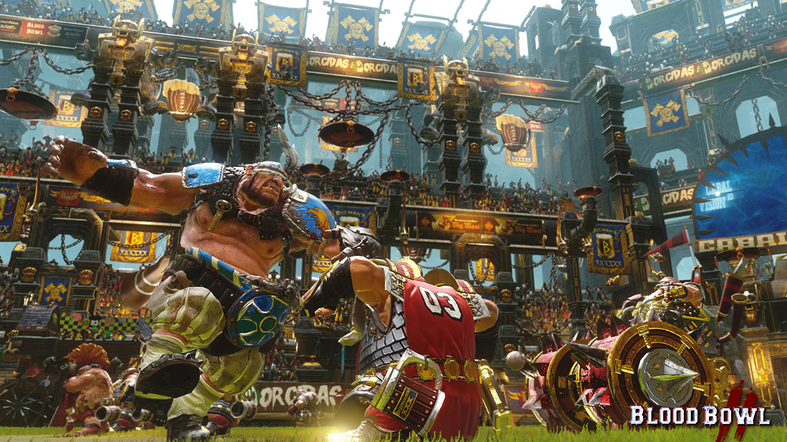
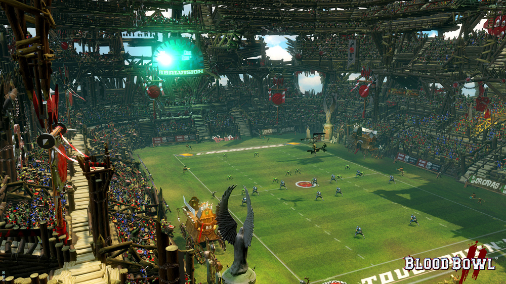
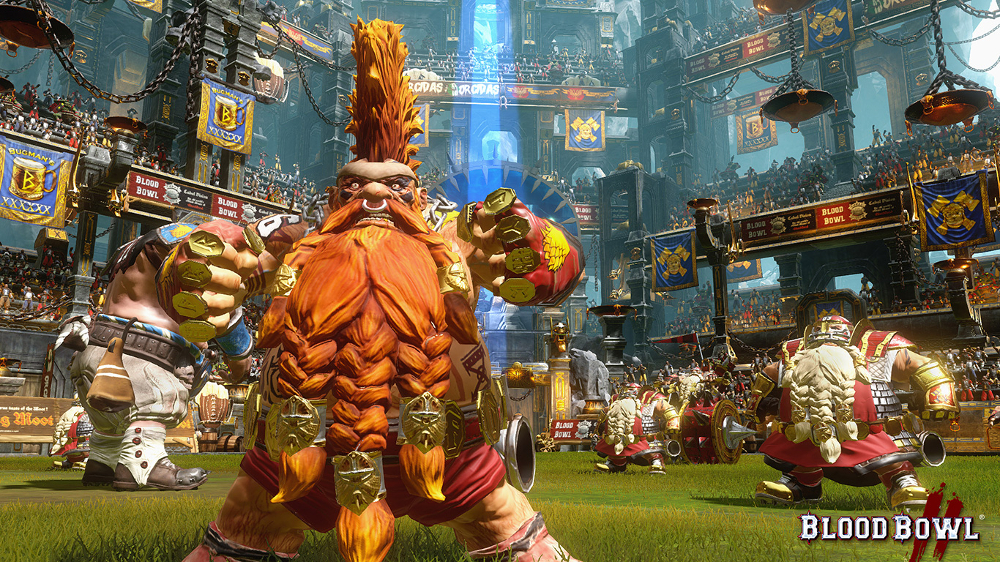
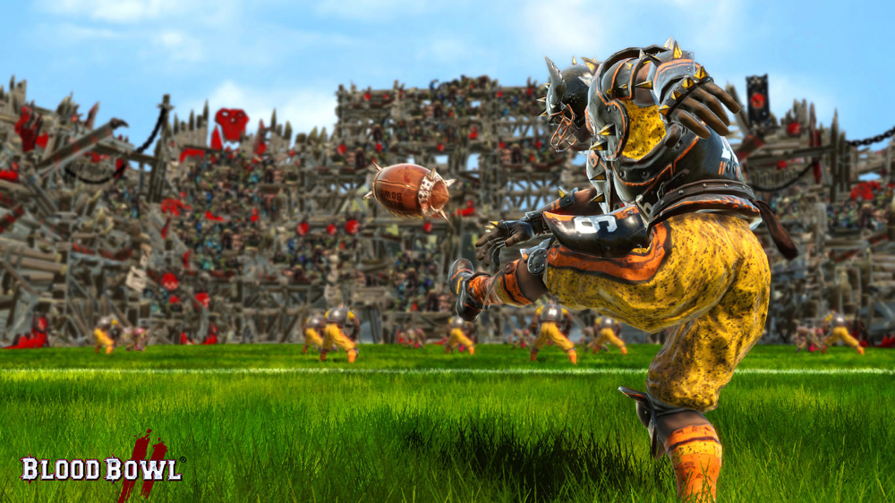
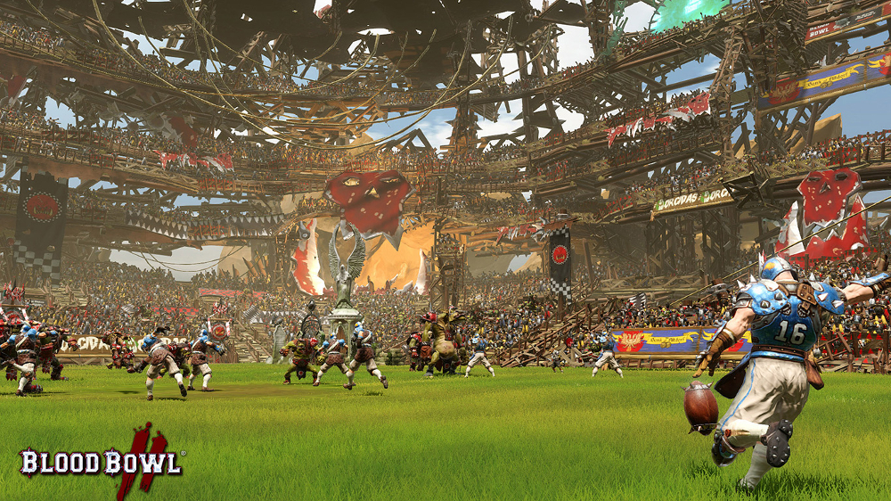
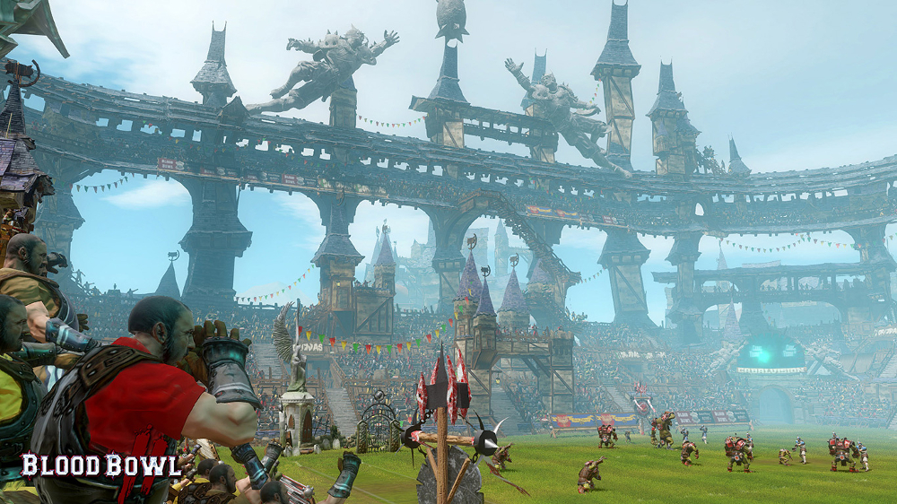
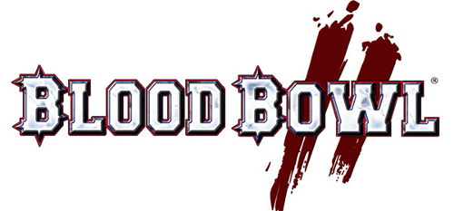

Réf FOCUS HOME : 3512899113282
Version boîte






FOCUS HOME
Garantie légale de conformité : 2 ans

Blood Bowl, développé par Cyanide Studio est l’adaptation en jeu vidéo du célèbre jeu de plateau de Games Workshop. Savant mélange entre le football américain et le monde fantastique de Warhammer, cet incroyable jeu de stratégie en tour par tour s’est déjà écoulé à plus d’un million d’exemplaires sur différentes plateformes.
Tout en conservant les ingrédients qui ont fait le succès de son prédécesseur, Blood Bowl II passe à la vitesse supérieure : un nouveau moteur de jeu permettant de donner vie à l’univers de Games Workshop ainsi que de nouvelles animations encore plus spectaculaires, des effets et ambiances sonores plus réalistes, accompagnés d’une caméra plus dynamique vous feront vibrer au rythme des matches de Blood Bowl.
L’ambitieuse campagne solo placera les joueurs à la tête de l’une des équipes les plus célèbres de l’univers de Blood Bowl, les Reikland Reavers qu’il leur faudra mener aux sommets à travers de nombreux matchs originaux et vraiment uniques où l’IA mettra vos compétences de coach à rude épreuve.
Le mode « Ligue » vous permettra d’incarner un entraineur dans l’univers de Blood Bowl. A vous de gérer votre club, votre équipe et même votre stade ! Vous débuterez avec un stade standard et pourrez, au fil du jeu, débloquer et acheter de nouveaux éléments afi n de l’agrandir, acquérir de nouveaux services pour votre équipe ou encore même de construire de nouvelles infrastructures.
Enfin, le mode multijoueur s’étoffe en proposant une nouvelle ligue multijoueur, conçue pour permettre plus de liberté et d’interactions entre les entraineurs.